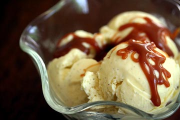

Creamy Vanilla
Ingredients:
- 2 eggs
- 1 cup sugar
- 6 1/4 teaspoon sal
- 2-1/2 cups heavy whipping cream
- 2 cups half-and-half cream
- 2-1/4 teaspoons vanilla extract
Directions:
- In a heavy saucepan, combine the first five ingredients. Cook over medium-low heat, stirring constantly, until the mixture is thick enough to coat a metal spoon and reaches at least 160 degree. Remove from the heat; cool quickly by setting pan in ice and stirring the mixture.
- Cover and refrigerate overnight or freeze immediately. When ready to freeze, pour custard and vanilla into the cylinder of an ice cream freezer. Freeze according to the manufacturer's directions. Yield: about 1-1/2 quarts.